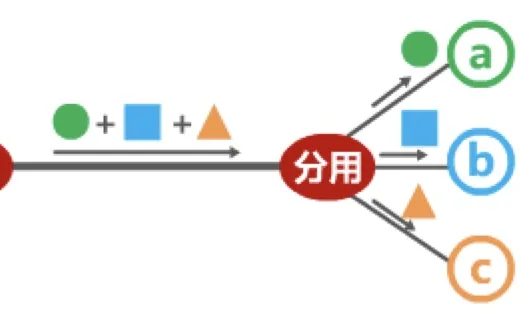
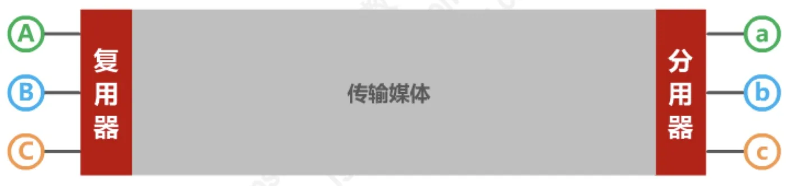
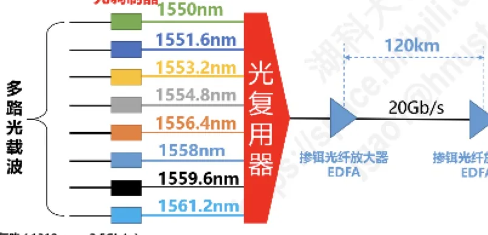

计算机通信与网络 · 第 3 章 数据链路层
3.6.2 媒体接入控制 —— 静态划分信道
3.6.1 节把媒体接入控制分成静态划分信道和动态接入控制两大类，本节专门讲静态划分信道。所谓「静态划分」，本质上就是信道复用：把一条物理线路的传输容量划分成多条互不干扰的通信信道。我们将依次看频分复用、时分复用、波分复用和码分复用四种方法，其中码分复用 CDMA 的码片序列与内积运算需要重点掌握。
1. 信道复用：为什么要复用
复用（Multiplexing）是通信技术中的一个重要概念：复用就是通过一条物理线路同时传输多路用户的信号。当网络中传输媒体的传输容量大于多条单一信道传输的总通信量时，就可以利用复用技术在一条物理线路上建立多条通信信道，从而充分利用传输媒体的带宽。
它的现实意义很直观：如果每一对用户都独占一条物理线路，线路数量会随用户数迅速膨胀，而每条线路的容量大多闲置着。改用一条共享的物理线路，在两端分别加上复用器和分用器，多路信号就能合并传输、到达后又各自分开，媒体带宽得到充分利用。

2. 四种基本的信道复用方法
复用可以从「分什么资源」的角度分成四类，它们也是本节和后续内容的骨架：
- 频分复用 FDM（Frequency Division Multiplexing）：把频带资源切给不同用户；
- 时分复用 TDM（Time Division Multiplexing）：把时间资源切给不同用户；
- 波分复用 WDM（Wavelength Division Multiplexing）：光的频分复用，把不同的光波长分给不同用户；
- 码分复用 CDM（Code Division Multiplexing）：用不同的码型区分用户。
值得注意的是，FDM 与 TDM 要求各子信道之间留出隔离频带或保护时间，而 CDM 的用户可以在同样的时间、同样的频带上通信，靠码型的正交性把彼此分开。

3. 频分复用 FDM
频分复用的做法是把传输媒体的总频带划分成若干个子频带，每个子频带构成一条子信道，相邻子频带之间留出一段隔离频带（保护频带），以免各路信号相互干扰。每个用户分到一条子信道后，在整个通信过程中一直占用它。
因此频分复用的特点是：所有用户同时占用不同的频带资源并行通信。原讲义给出的示意图中，画有子信道 1（子频带 1）、子信道 2（子频带 2）、子信道 3（子频带 3），它们之间用隔离频带隔开（原讲义第 446 页）。
4. 时分复用 TDM
时分复用的做法是把时间划分成一段段等长的时分复用帧（TDM 帧），每一个 TDM 帧再划分为若干个时隙，每个用户固定占用每个 TDM 帧中某个序号的时隙。也就是说，各用户轮流使用整条频带：轮到自己的时隙时才发送，其余时间信道让给别人。
它的特点正好与频分复用相对：时分复用的所有用户在不同的时间占用同样的频带宽度。原讲义示意图中的 TDM 帧里标出了「与 a 使用的时隙」「与 b 使用的时隙」「与 c 使用的时隙」等，一眼就能看出用户是按时间轮换的（原讲义第 450 页）。
把两种复用放在一起比较：FDM 是「同一时间、不同频带」，TDM 是「不同时间、同一频带」，两者都要求用户在整个通信过程中持续占用分配给自己的那份资源，属于前面 3.6.1 节所说的静态划分信道。
5. 波分复用 WDM
波分复用本质上是光的频分复用：在一根光纤上同时传输多个不同波长（即不同频率）的光载波，每个波长承载一路信号。因为光波的频率极高，通常用波长而不是频率来标记各路光载波，所以叫「波分」。
原讲义的示意图给出的是一条典型的密集波分复用系统：8 路光载波的波长集中在 1550 nm 附近、相邻间隔 1.6 nm（1550.0 nm、1551.6 nm、1553.2 nm、1554.8 nm、1556.4 nm、1558.0 nm、1559.6 nm、1561.2 nm），每路的速率约为 2.5 Gb/s，8 路合起来总容量约 20 Gb/s；长距离传输时每隔 120 km 设置一个掺铒光纤放大器 EDFA（Erbium Doped Fiber Amplifier）对光信号进行中继放大，两端分别由光调制器和光解调器完成电光、光电转换（原讲义第 451 页）。

6. 码分复用 CDM 与码分多址 CDMA
码分复用 CDM 是另一种共享信道的方法。实际上由于该技术主要用于多址接入，人们更常用的名词是码分多址 CDMA（Code Division Multiple Access）。同理，频分复用 FDM 和时分复用 TDM 同样可用于多址接入，相应的名词是频分多址 FDMA（Frequency Division Multiple Access）和时分多址 TDMA（Time Division Multiple Access）。
本课程不严格区分复用与多址的概念，可以这样简单理解：
- 复用是把单一媒体的频带资源划分成很多子信道，这些子信道之间相互独立、互不干扰。从媒体的整体频带资源上看，每个子信道只占用该媒体频带资源的一部分；
- 多址（更确切地应该称为多点接入）处理的是动态地把信道分配给用户。这在用户仅仅暂时性地占用信道的应用中是必需的，所有的移动通信系统基本上都属于这种情况；相反，在信道永久性地分配给用户的应用中，多址是不需要的（无线广播或电视广播站就是这样）；
- 某种程度上，FDMA、TDMA、CDMA 可以分别看成是 FDM、TDM、CDM 的应用。
与 FDM、TDM 都不同，CDM 的每一个用户可以在同样的时间使用同样的频带进行通信。之所以不会互相干扰，是因为各用户使用了经过特殊挑选的不同码型。CDM 最初用于军事通信，因为这种系统所发送的信号有很强的抗干扰能力，其频谱类似于白噪声，不易被敌人发现；随着技术的进步，CDMA 设备的价格和体积都大幅度下降，因而现在已广泛用于民用的移动通信中。
7. CDMA 的工作原理
（1）码片与码片序列
在 CDMA 中，每一个比特时间再划分为 m 个短的间隔，称为码片（Chip）。通常 m 的值是 64 或 128；为了简单起见，后续举例中我们假设 m 为 8。
使用 CDMA 的每一个站被指派一个唯一的 m bit 码片序列（Chip Sequence），发送时按下面的规则进行直接序列扩频 DSSS（Direct Sequence Spread Spectrum）：
- 一个站如果要发送比特 1，则发送它自己的 m bit 码片序列；
- 一个站如果要发送比特 0，则发送它自己的 m bit 码片序列的二进制反码。
原讲义的例子：指派给某个站点的码片序列为 00011011，则发送比特 1 时发送 00011011，发送比特 0 时发送它的反码 11100100。为了方便运算，按惯例把码片序列中的 0 记为 −1、把 1 记为 +1，于是该站点的码片序列写成向量形式就是（−1 −1 −1 +1 +1 −1 +1 +1）。注意：一个比特被扩展成了 m 个码片，这也是「扩频」二字的由来——信号占用的频带被展宽了，换来的是很强的抗干扰能力。
（2）码片序列的挑选原则
码片序列不能随便分配，必须遵守两条原则：
- 分配给每个站的码片序列必须各不相同，实际常采用伪随机码序列；
- 分配给每个站的码片序列必须相互正交（规格化内积为 0）。
令向量 S 表示站 S 的码片序列，向量 T 表示其他任何站的码片序列，则不同站 S 和 T 的码片序列正交，就是向量 S 和 T 的规格化内积为 0：
S · T = (1/m) Σi=1m SiTi = 0
此外还有两条常用的结果：任何一个码片向量与自己的规格化内积都是 1，即 S · S = 1；与自己反码的规格化内积都是 −1，即 S · S̅ = −1。（原讲义把这些结果一并列在「参考公式」中。）
（3）接收方怎样判断
假设所有站所发送的码片序列都是同步的，接收站 D 知道其他各站所特有的码片序列。设站 A 发送比特 1（发的是 A 的码片序列 A）、站 B 发送比特 0（发的是 B 的反码，内积须为 −1）、站 C 未发送，则接收站 D 收到的是叠加信号 A + B。它用收到的信号分别与各站的码片序列做规格化内积：
- (A + B) · A = A · A + B · A = 1 + 0 = 1，计算结果为数值 1，说明被判断方（A）发送了比特 1；
- (A + B) · B = A · B + B · B = 0 + (−1) = −1，计算结果为数值 −1，说明被判断方（B）发送了比特 0；
- (A + B) · C = A · C + B · C = 0 + 0 = 0，计算结果为数值 0，说明被判断方（C）未发送。
这就是 CDMA 的巧妙之处：接收方不必把叠加在一起的信号「拆开」，只要拿它和自己关心的那个站的码片序列做一次内积，就能单独取出该站的数据，而其他站的信号在正交性下自动抵消为零。
8. 用几道题目检验码片序列的内积运算
（1）码片序列的分配是否合法
原讲义的习题 1：假设给站 S 分配的码片序列为 01011101，给站 T 分配的码片序列为 10111000，这样的分配正确吗？
- 检查码片序列是否各不相同：满足；
- 检查码片序列是否相互正交：不满足。
验证过程：用向量 S 表示站 S 的码片序列（−1 +1 −1 +1 +1 +1 −1 +1），用向量 T 表示站 T 的码片序列（+1 −1 +1 +1 +1 −1 −1 −1），逐项相乘后求和，结果为 −2，不是 0，所以两者不正交，这样的分配是不正确的。
（2）四个站同时通信时谁发了什么
原讲义的习题 2：共有 4 个站进行 CDMA 通信，这 4 个站的码片序列分别为
- A：（−1 −1 −1 +1 +1 −1 +1 +1）
- B：（−1 −1 +1 −1 +1 +1 +1 −1）
- C：（−1 +1 −1 +1 +1 +1 −1 −1）
- D：（−1 +1 −1 −1 −1 −1 +1 −1）
现收到码片序列（−1 +1 −3 +1 −1 −3 +1 +1），问是哪些站发送了数据？发送的是比特 1 还是 0？
解析思路：用收到的码片序列分别与各站的码片序列求内积。若计算结果为数值 1，则被判断的站发送了比特 1；若为数值 −1，则发送了比特 0；若为数值 0，则该站未发送数据。逐个判断（码片长度为 8，因此乘以 8 求和后除以 8 做规格化）：
- A：求和结果为 8，规格化后为 1，即 A 发送了比特 1；
- B：求和结果为 −8，规格化后为 −1，即 B 发送了比特 0；
- C：求和结果为 0，即 C 未发送数据；
- D：求和结果为 8，规格化后为 1，即 D 发送了比特 1。
（3）从 12 位接收序列中还原一个站发送的比特串
原讲义的 2014 年真题：站点 A、B、C 通过 CDMA 共享链路，A、B、C 的码片序列（chipping sequence）分别是（1, 1, 1, 1）、（1, −1, 1, −1）和（1, 1, −1, −1）。若 C 从链路上收到的序列是（2, 0, 2, 0, 0, −2, 0, −2, 0, 2, 0, 2），则 C 收到 A 发送的数据是什么？
解析：由于题目所给各站的码片序列为 4 位，因此把站点 C 收到的 12 位序列也按 4 位一组分成三部分：（2, 0, 2, 0）、（0, −2, 0, −2）、（0, 2, 0, 2）。再用站点 A 的码片序列（1, 1, 1, 1）分别与这三个部分做规格化内积：
- （1, 1, 1, 1）·（2, 0, 2, 0）÷ 4 =（1×2 + 1×0 + 1×2 + 1×0）÷ 4 = 1，A 发送的是比特 1；
- （1, 1, 1, 1）·（0, −2, 0, −2）÷ 4 =（1×0 + 1×(−2) + 1×0 + 1×(−2)）÷ 4 = −1，A 发送的是比特 0；
- （1, 1, 1, 1）·（0, 2, 0, 2）÷ 4 =（1×0 + 1×2 + 1×0 + 1×2）÷ 4 = 1，A 发送的是比特 1。
所以 C 收到 A 发送的数据是 101，对应选项 B。
本节小结
- 静态划分信道的方法统称信道复用：复用就是通过一条物理线路同时传输多路用户的信号，两端分别用复用器与分用器完成合路与分路；
- 频分复用 FDM：所有用户同时占用不同的频带资源并行通信，子频带之间需要隔离频带；时分复用 TDM：所有用户在不同的时间占用同样的频带宽度，时间划分为 TDM 帧、帧内分为时隙；
- 波分复用 WDM 是光的频分复用，用不同波长的光载波承载多路信号，长距离传输靠掺铒光纤放大器 EDFA 中继；
- 码分复用 CDM 主要用于多址接入，因而常称码分多址 CDMA：每个站被指派唯一的、相互正交的 m bit 码片序列，发比特 1 发码片序列本身、发比特 0 发其反码（直接序列扩频 DSSS）；复用的三种对应多址形式是 FDMA、TDMA、CDMA；
- 规格化内积是 CDMA 的核心运算：S · T = (1/m)Σ SiTi，不同站之间为 0（正交），自己与自己为 1，自己与自己反码为 −1；接收方用收到的叠加序列与某站的码片序列做内积，结果为 1 说明该站发了比特 1，为 −1 说明发了比特 0，为 0 说明该站未发送。